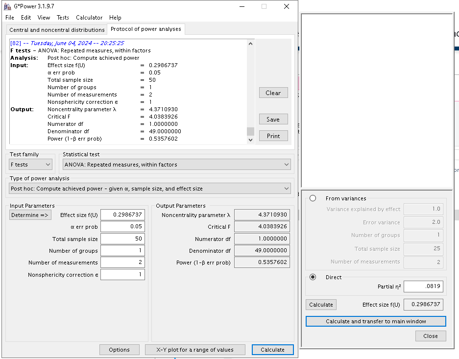

Factorial designs: power from means and SD
Power Analysis for the Factorial Designs
PAMLj version ≥ 0.2.0
Here we compare the results of PAMLj with other software that performs power analysis. In particular, we will compare our results with R pwr package, Superpower R package, and G*Power.
Data
Factorial designs power analysis from
Expected Means of PAMLj
requires a dataset with the expected means and the standard deviations
for the desin cells one is planning. Factors of the design should be
listed as categorical factors, and their means and sd should be listed
in subsequent columns. For instance, a simple design with two groups,
can be prepared like this:

When data are defined, one can use the
Factorial designs power analysis from
Expected Means interface in define the design factors,
their means and standard deviations.

As soon as the variables are defined, the effect sizes are computed together with the power parameters.
As a quick test, we can use G*Power to check the
results, using its interface for inputing the means and the standard
deviations.

Results are almost the same, with only one unit of difference.
Unfortunately, G*Power does not allow to input means and sd other than for one-way between-subjects designs, so we cannot test PAMLj for more complex designs. For this purpose, we can use Superpower R package, which allows computing the expected power starting from an array of means and standard deviations.
Between-subjects ANOVA
We can use the dataset factorial which comes with PAMLj in the jamovi
data library.

Data describe the means and standard deviations for a 2X3X2 design.

In Factorial designs power analysis from
Expected Means we can simply input the factors, indicating
also the column representing the means and the one representing the
standard devations.

For the purpose of computing the expected power, we can set the sample size to 240, corresponding to 20 cases per cell.
PAMLj computes the expected effect sizes and the expected power for all factors effects and their interaction.
For comparison, we can use Superpower employing the
following code:
ds<-pamlj::factorial
std<-8
n<-20
des_str<-"2b*3b*2b"
design <- Superpower::ANOVA_design(design = des_str,
#sample size per group
n = n,
#pattern of means
mu =ds$means,
sd = std,
plot=FALSE
)
exact_result <- Superpower::ANOVA_exact(design,
alpha_level = .05,
verbose = FALSE)
zapsmall(exact_result$main_results)## power partial_eta_squared cohen_f non_centrality
## a 22.12255 0.00622 0.07909 1.42604
## b 25.56930 0.01018 0.10142 2.34531
## c 62.62434 0.02251 0.15176 5.25104
## a:b 37.63354 0.01565 0.12610 3.62552
## a:c 25.06133 0.00726 0.08550 1.66667
## b:c 26.89367 0.01078 0.10440 2.48490
## a:b:c 19.44604 0.00738 0.08620 1.69427It is easy to check that the expected power is almost identical
(apart for rounding) for all effects. It is worth noticing that despite
the expected power is identical for the two software, they produce
different effect size indices. This is due to the way the two software
compute the effect sizes. Superpower build a dataset of the
input sample size and estimate the effect size, whereas PAMLj computes the estimated effect size in
the population. Because these effect size are upward biased, in small to
moderate sample size they tend to be larger than in the population.
Indeed, if we ask Superpower to compute the effect sizes
for a very large sample, the estimated indices converge to the ones
obtained in PAMLj.
ds<-pamlj::factorial
std<-8
n<-5000
des_str<-"2b*3b*2b"
design <- Superpower::ANOVA_design(design = des_str,
#sample size per group
n = n,
#pattern of means
mu =ds$means,
sd = std,
plot=FALSE
)
exact_result <- Superpower::ANOVA_exact(design,
alpha_level = .05,
verbose = FALSE)
zapsmall(exact_result$main_results)## power partial_eta_squared cohen_f non_centrality
## a 100 0.0059 0.0771 356.5104
## b 100 0.0097 0.0989 586.3281
## c 100 0.0214 0.1479 1312.7604
## a:b 100 0.0149 0.1229 906.3802
## a:c 100 0.0069 0.0833 416.6667
## b:c 100 0.0102 0.1018 621.2240
## a:b:c 100 0.0070 0.0840 423.5677Repeated measures designs
Let’s now assume that the design we have analyzed before was a
repeated measures design. In repeated measures designs, to compute the
power parameters from means and standard deviations, one needs to
anticipate the average correlations among repeated measures. Let’s
assume that the repeated measures correlate, on average, .2. We can
setup the analysis as before, but in the Repeated Measures
tab, we can declare which factor is within-subjects and input the
expected correlation. In this example, we set the sample size to 50.
Having set the factors as repeated measures factors and with a non-zero correlation changes the effect size estimation and the estimated power.

We should also note that the residuals degrees of freedom are now different, and they depended on the sample size and degrees of freedom of the effect.
For comparison, we run the same analysis with
Superpower.
ds<-pamlj::factorial
std<-8
n<-50
des_str<-"2w*3w*2w"
r<-.2
design <- Superpower::ANOVA_design(design = des_str,
#sample size per group
n = n,
#pattern of means
mu =ds$means,
r=r,
sd = std,
plot=FALSE
)
exact_result <- Superpower::ANOVA_exact(design,
alpha_level = .05,
verbose = FALSE)
zapsmall(exact_result$main_results)## power partial_eta_squared cohen_f non_centrality
## a 54.36549 0.08336 0.30157 4.45638
## b 66.25727 0.06958 0.27347 7.32910
## c 97.78008 0.25087 0.57869 16.40951
## a:b 85.21552 0.10363 0.34001 11.32975
## a:c 60.92486 0.09608 0.32603 5.20833
## b:c 68.95522 0.07342 0.28149 7.76530
## a:b:c 51.50017 0.05126 0.23244 5.29460We can see that the results are pretty similar. The difference is due
to the fact that Superpower estimates power based on the
sample estimates of the effect size, whereas PAMLj uses the population effect size. To add
an additional proof, we can ask GPower to compute the power for a
Repeated measure effect with effect size \(p\eta^2=.0818\), 1 DF (two measures), all
within effects (1 group) with \(N=50\)
(and SPSS effect size,
cf. Rosetta: Factorial power from
effect size).

Results are indeed identical to PAMLj results.
Comments?
Got comments, issues or spotted a bug? Please open an issue on PAMLj at github or send me an email
Back to PAMLj: rosetta
References
’